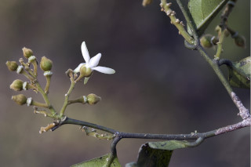
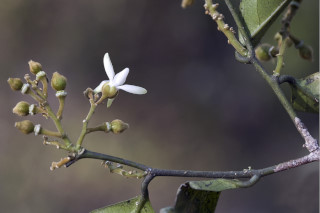

Images :


 



| Habit : | Large shrubs or small trees up to 8 m tall. |
| Leaves : | Leaves simple , alternate , distichous ; petiole 0.4-0.7 cm long, canaliculate , glabrous ; lamina 5.5-15 X 2- 5.5 cm, narrow elliptic to elliptic-oblong or oblong-lanceolate , apex acuminate with blunt tip, base acute or slightly attenuate , margin entire or slightly undulate ; chartaceous or subcoriaceous , glabrous ; midrib slightly raised above; secondary_nerves 5-9 pairs, gradually curved; tertiary_nerves horizontally reticulo-percurrent . |
| Inflorescence / Flower : | N/A |
| Fruit and Seed : | N/A |